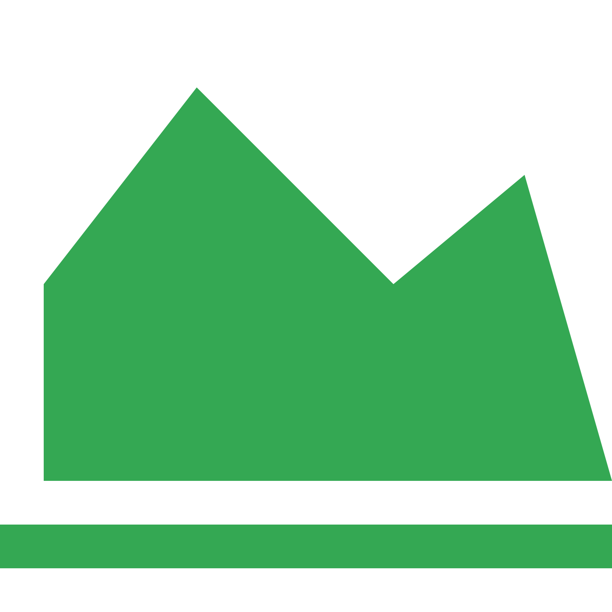

Kabupaten Bantul terletak antara 110°12’34” sampai 110°31’ 08’’ Bujur Timur dan antara 7°44’ 04’’sampai 8°00’27’’ Lintang Selatan. Kabupaten Bantul merupakan salah satu Kabupaten dari 5 Kabupaten/Kota di Daerah Istimewa Yogyakarta (DIY) yang terletak di Pulau Jawa. Kabupaten Bantul terdiri dari 17 kecamatan, yaitu Kecamatan Srandakan, Sanden, Kretek, Pundong, Bambanglipuro, Pandak, Bantul, Jetis, Imogiri, Dlingo, Pleret, Piyungan, Banguntapan, Sewon, Kasihan, Pajangan dan Sedayu. Luas wilayah Kabupaten Bantul 50.685 Ha. Hasil produksi perkebunan utama di Kabupaten Bantul adalah Kelapa, Tebu, Tembakau, Kakao, dan Karet.
SelengkapnyaDashboard Peta
Berita
Dari hasil produksi berbagai jenis tanaman tersebut nantinya akan dilakukan penyetoran pada sebuah industri yang akan dilakukan proses pengolahan lebih lanjut sehingga menghasilkan produk baru.
Explore MorePenilaian
Silahkan memberikan penilaian mengenai website Persebaran Hasil Produksi Perkebunan di Kabupaten Bantul Tahun 2023.
Terimakasih telah mengunjungi website ini, semoga dapat bermanfaat.
Semoga Selalu Sukses
{kind=link}
{kind=link}
{kind=link}
{kind=link}
{kind=link}